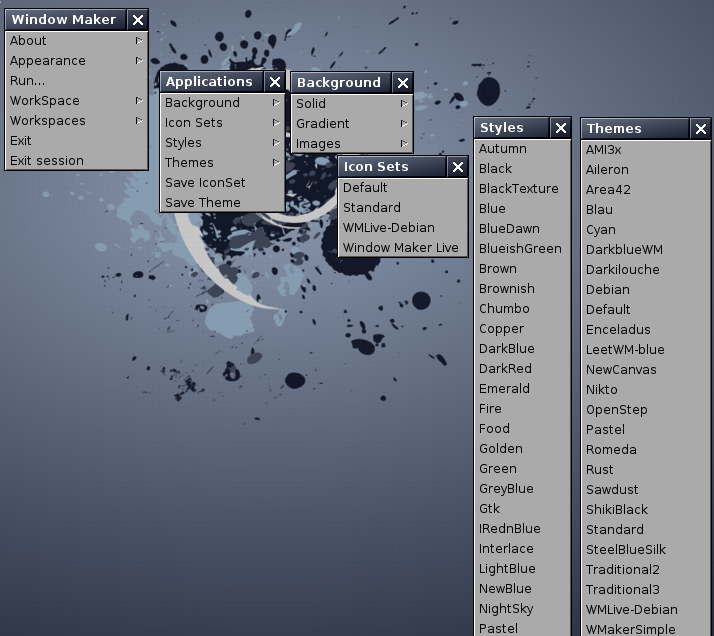

Backgrounds and Themes
Back to index
For the purposes of this guided tour, only those appearance options that
are built-in to Window Maker will be considered. Crafting custom styles
and themes is not terribly difficult, nor do you need any special
knowledge of programming languages or other specialized skills, but
this is outside the intended scope of the guided tour.
The appearance of the Window Maker GUI can easily be customized from
the applications menu item "Appearance."
Themes, styles, icon sets, and backgrounds can be selected as soon as
they are installed in the right directory.
Themes should be installed in the directory
~/GNUstep/Library/WindowMaker/Themes/
Styles should be installed in the directory
~/GNUstep/Library/WindowMaker/Styles/
Backgrounds should be installed in the directory
~/GNUstep/Library/WindowMaker/Backgrounds/
If you are working within a freshly-installed instance of Window Maker,
your Linux distribution probably provided some default themes, styles
and backgrounds. Rarely, a distribution
provides no additional themes, styles or backgrounds - expecting users
to provide these on their own.
Here is the "Appearance" menu and some of its associated sub-menus,
including themes, styles and backgrounds:

In the screenshot above, most of the styles are default to the Debian
GNU/Linux distribution, while most of the themes were user-installed.
Many themes are available for download on the internet.
Backgrounds may be system-generated solid or gradient colors, or
they may be images from user or distibution-supplied image files. The
easiest way to change a system-generated background color or color
gradient is to select one from the "Appearance -> Background -> < Solid or Gradient >" menu. In most default configurations there will be six to eight selections in each category.
Likewise, the easiest way to change to a background image is to
select one from the "Appearance -> Background -> Images" menu. If
you wish to install your own images for use as backgrounds, place the
image file in your ~/GNUstep/Library/WindowMaker/Backgrounds/ directory
and they will be available from the menu immediately.
Styles
A style defines the look of the key components of the Window Maker
desktop. These components include the window titlebar and resizebar, the menu title and text field, and the icon background.
The characteristics defined in a style (or theme) are the color
and
"texture" of key GUI elements. Texture in this context means using
multiple colors in
various color gradients - you are not limited to solid colors
only.
The easiest method for changing the style is to select a style from the
"Appearance -> Style" menu.
A style may also be created using the Appearance
Preferences tool in WPrefs.app.
From this tool, you may configure the color and texture of window
elements (titlebars, resizebars), menu elements (menu titlebar, menu
item text colors, menu "style") and the color and texture of icon
backgrounds. The location of titlebar text and the font and text color
for window and menu text may also be configured here.

More information on creating a style "from scratch" may be found in the Window Maker User's Guide. (Scroll down to the section on "Appearance Options.")
A step-by-step guide to crafting a custom style is available HERE.
In its most basic form, a theme is simply a style that also
includes a background. Some Linux distributions provide one or more
default themes for use system-wide. You may
install your own themes in the ~/GNUstep/Library/WindowMaker/Themes/
directory. Themes installed in the correct directory will be
available for selection in the "Appearance -> Themes" menu.
Selecting Themes from the Appearance menu runs the setstyle program to install the
theme and record it in the ~/GNUstep/Defaults/WindowMaker
file.
Two sites
providing preconfigured themes are HERE
and HERE.
An internet search for "Window Maker themes" will generate additional
results, and you should also check your Linux distribution's
repositories - some provide themes for installation using your
distribution's package management system.
Themes may include images in png, jpg, xpm, and other supported image file
formats for key elements of the GUI such as titlebars, icon
backgrounds, and the workspace background. Themes that include images
cannot be stored as a single text file, and therefore must be stored in a
directory. A theme directory must contain all of the image files needed
for the theme along with a file named "style." The style file in a
theme directory will specify all of the GUI elements including any
image files used for those elements in lieu of rgb color
specifications. A theme directory must use the suffix ".themed" after
the theme name.
Back to index